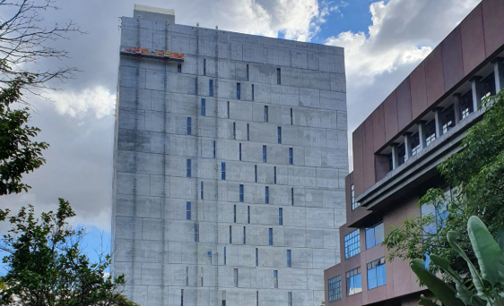
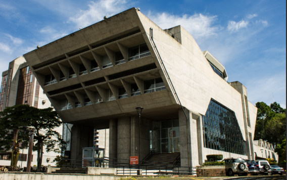

Investigación: Desarrollo Urbano
Esta investigación abarca el desarrollo urbano del casco central de San José a través de dos corrientes arquitectónicas fundamentales y contrastantes: la Arquitectura Vernácula y la Arquitectura Brutalista.
Especialidad de Dibujo y Modelado de Edificaciones
Esta investigación abarca el desarrollo urbano del casco central de San José a través de dos corrientes arquitectónicas fundamentales y contrastantes: la Arquitectura Vernácula y la Arquitectura Brutalista.
La arquitectura vernácula en Costa Rica es el tipo de construcción tradicional que se desarrolla usando materiales locales, técnicas heredadas y diseños adaptados al clima y cultura del país. Básicamente, son las construcciones “propias” de cada región, hechas muchas veces por las mismas comunidades y no necesariamente por arquitectos profesionales.
La historia de la arquitectura vernácula en San José comienza desde los primeros poblados de la ciudad, entre los siglos XVIII y XIX, cuando las viviendas eran construidas por los mismos habitantes usando materiales locales como adobe, bahareque, madera y teja. Estas construcciones estaban pensadas para resistir el clima lluvioso y los terremotos frecuentes del país.
El bahareque es una mezcla de madera, caña y barro utilizada en paredes. El adobe consiste en bloques de barro y paja secados al sol. La madera fue muy usada en paredes, pisos y estructuras estructurales. La teja de barro se utilizaba en los techos antiguos, mientras que el zinc se volvió común posteriormente. La piedra se empleaba en bases, y la cal junto con el barro servían para acabados.
Arquitectos clave:
Ubicaciones de referencia: Valle Central de Costa Rica, San José, Limón, Puntarenas y Talamanca.


La arquitectura brutalista es un estilo arquitectónico que surgió a mediados del siglo XX y se caracteriza por el uso de formas grandes, pesadas y materiales expuestos, especialmente el concreto u hormigón. Su nombre proviene del término francés béton brut, que significa “concreto crudo”.
La corriente brutalista llegó a los edificios públicos josefinos principalmente entre las décadas de 1960 y 1980, cuando Costa Rica buscaba modernizar su infraestructura y transmitir una imagen de progreso y solidez institucional. Influenciada por tendencias internacionales, comenzó a utilizarse en San José en edificios gubernamentales, instituciones públicas, universidades y bancos.
Se caracteriza por el uso de formas geométricas, estructuras masivas y apariencia monumental con poca decoración. Destacan las líneas rectas, ventanas repetitivas y materiales expuestos sin recubrimientos. Los componentes más utilizados se centran en el concreto u hormigón expuesto, el acero, el vidrio, el hierro, la piedra y el ladrillo.
Arquitectos clave:
Obras de referencia: Banco Central de Costa Rica, Universidad de Costa Rica, Caja Costarricense de Seguro Social y la Asamblea Legislativa.

